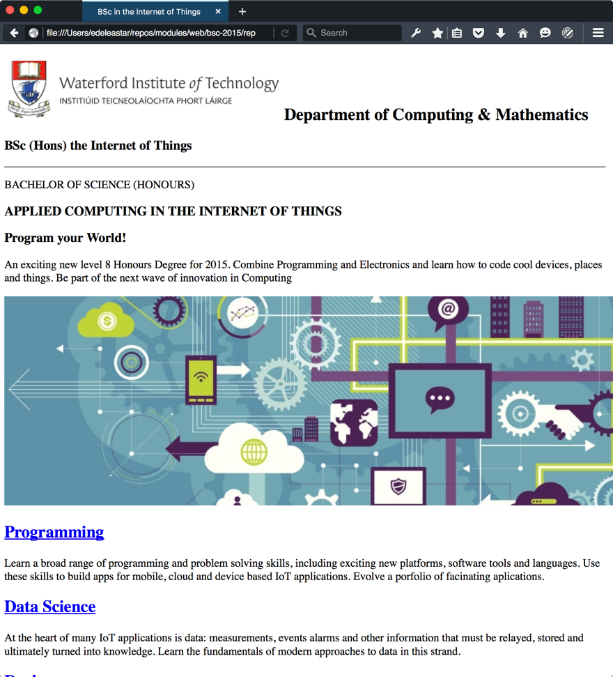
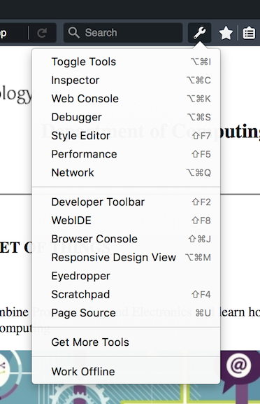

Objectives
Explore a web site that embodies many of the foundation techniques for structuring and styling a web site. Deploy the lab using the surge tool set and service.
Setup
Download this archive here:
Unzip it somewhere suitable - and open the project in Sublime:
Explore the pages in detail - and note the range of images in the assets folder. Also notice that all of the files are inside the public folder of the project.
Browse the pages in you web browser:
If you can, download and install:
and open the site using it instead of chrome:

Explore the 'inspector' options:

and become familiar with some of the tools. The Style Editor is particularly interesting:

Note that it is currently showing an error for our site - we are linking to style.css in the head, but we haven't provided a css file yet.
style.css
Create a new stylesheet in the public folder:
style.css
body {
max-width: 80%;
margin: 0 auto;
}Because the links are already in all the files, the margins should immediately be reset for the full site.
In Firefox Developer Edition, you can use the style editor to dynamically change the css in order to see different effects:
Try adjusting the margin width and you will see the canvas changes immediately.
Now append these rules to the stylesheet:
.header-crest-img {
float: right;
margin: 1em;
}
.footer-social-links {
text-align: center
}These are to better position the header crest and also the social media links at the foot of the page. They will only work if we give these elements the appropriate classes:
<img class="header-crest-img" src="assets/images/wit-crest.png" alt="WIT Crest"><hr>
<p class="footer-social-links">
<a href="http://www.facebook.com/witcomp"> facebook </a>
<a href="http://twitter.com/ComputingAtWIT"> twitter </a>
<a href="https://ie.linkedin.com/pub/computing-at-wit/a9/221/1b6"> linkedin </a>
</p>Continue to experiment with the style editor to try out different options
Project so far...
- Download Archive: https://github.com/wit-ictskills-2016/iot-web/tree/V02
Header + Footer
The changes you just introduced will need to be carried out on all the strand pages:
<img class="header-crest-img" src="assets/images/wit-crest.png" alt="WIT Crest"><hr>
<p class="footer-social-links">
<a href="http://www.facebook.com/witcomp"> facebook </a>
<a href="http://twitter.com/ComputingAtWIT"> twitter </a>
<a href="https://ie.linkedin.com/pub/computing-at-wit/a9/221/1b6"> linkedin </a>
</p>Do this now.
Project so far...
Image Sizing
The images throughout the site are rendered without any size adjustments. Many are outsize and do not give an optimal user experience.
One simple strategy to address this diversity of image sizes could be to introduce a series of rules to establish a preferred height for each image. We have a number of image types - which we target in these rules:
.footer-img {
height: 90px;
}
.strand-right-img {
float: right;
margin: 1em;
height: 350px;
}
.strand-left-img {
float: left;
margin: 1em;
height: 350px;
}
.strand-timeline-img {
height: 80px;
}
.strand-modules-img {
height: 75px;
}
.strand-modules-double-img {
height: 150px;
}
.strand-modules-treble-img {
height: 310px;
}The first rule is targeting the images at the end of the index page:
<h4> Supported by leading edge research at... </h4>
<p>
<img class="footer-img" src="assets/images/tssg.png" alt="TSSG">
<img class="footer-img" src="assets/images/ctrg.png" alt="CTRG">
<img class="footer-img" src="assets/images/automotive.png" alt="ATG">
</p>Test this now - and these 'sponsor' images show appear more uniform.
The remaining rules are associated with each of the strand pages -project.html for instance:
<h1> Project </h1>
<p>
<img class="strand-right-img" src="../assets/images/iot/project/project-1.png">
The programme will promote an ethos of collaboration, practical application, and innovation. A project module will be included at each stage of the programme (apart from semester 1) that, through individual and collaborative projects, will challenge students to combine the knowledge and skills acquired in the various strands. Each project module will also elaborate on a theme, orthogonal to the programme disciplines, but central to the student’s individual development.
</p>
<p>
<img class="strand-timeline-img" src="../assets/images/iot/timeline.png">
<img class="strand-modules-double-img" src="../assets/images/iot/project/project-modules.png">
</p>
<h2> Project Learning Path </h2>
<p>
<img class="strand-left-img" src="../assets/images/iot/project/project-2.jpeg"> The project will be assessed via a single report and presentation each semester. The report will demonstrate an artefact of the student’s choosing that integrates knowledge from two or more strands. This may be in the form of a software application, software/hardware combination, paper or combination of all of these. The ‘Orthogonal’ dimension must be addressed in the context of this report/presentation. The tuition team across each of the strands will stimulate project ideas and concepts for consideration by the students, who may take on board specific suggestions. Students as expected to proceed with ideas and concepts that particularly interest them individually, or collectively, in small teams.
</p>Note carefully the classes associated with each of the images here - and make these changes to all of the strand pages.
The strand-modules.. rules are for varying the height modules images, depending on whether there are 1, 2 or 3 rows of modules in the images.
Make all these adjustments now so that the images appear more or less uniformly.
Project so far...
Revised Index Layout
The home pages can be enhanced somewhat - perhaps improving the use of images on the page and also incorporating a simple multi-column structure.
Here are the rules:
.banner {
background: url("assets/images/banner.jpg") top center;
background-position: top center;
height:350px;
}
#summary
{
width: 40%;
float: left;
color: white;
background : rgba(58,84,90, 0.5);
margin : 1em;
padding : 1em;
clear:both;
}
#curriculum
{
width: 100%;
margin: .5em;
padding: .5em;
clear: both;
}
#col1 {
float: left;
width: 48%
}
#col2 {
float: right;
width: 48%
}
#sponsors
{
width: 100%;
clear: both;
}
#footer
{
width: 100%;
clear: both;
}Some of these rules are familiar from earlier layout labs.
To align index.html with these rules we need to make some adjustments to the structure of the page. In particular we need to wrap various sections in <div> elements, so that their properties can be targeted in interesting ways.
Here is the complete <body> element - which you can replace in index.html:
<div id="header">
<h2>
<img class="header-crest-img" src="assets/images/wit-crest.png" alt="WIT Crest">
Department of Computing & Mathematics
</h2>
<h3> BSc (Hons) the Internet of Things </h3>
<hr>
</div>
<div class="banner">
<div id="summary">
<p>
BACHELOR OF SCIENCE (HONOURS)
</p>
<h3>
APPLIED COMPUTING IN THE INTERNET OF THINGS
</h3>
<h3>
Program your World!
</h3>
<p>
An exciting new level 8 Honours Degree for 2015. Combine Programming and Electronics and learn how to code cool devices, places and things. Be part of the next wave of innovation in Computing
</p>
</div>
</div>
<div id="curriculum">
<hr>
<div id="col1">
<h2><a href="strands/programming.html"> Programming </a></h2>
<p>
Learn a broad range of programming and problem solving skills, including exciting new platforms, software tools and languages. Use these skills to build apps for mobile, cloud and device based IoT applications. Evolve a porfolio of facinating aplications.
</p>
<h2><a href="strands/data.html"> Data Science </a></h2>
<p>
At the heart of many IoT applications is data: measurements, events alarms and other information that must be relayed, stored and ultimately turned into knowledge. Learn the fundamentals of modern approaches to data in this strand.
</p>
<h2><a href="strands/devices.html"> Devices </a></h2>
<p>
The 'Things' we connect to are often physical devices. These can range from simple temperature sensors to sophisticated control systems like traffic lights or cameras. Connecting to and interacting with the physical world is the subject of this strand.
</p>
</div>
<div id="col2">
<h2><a href="strands/networks.html"> Networks </a></h2>
<p>
This strand will explore modern networks and cloud technology. Be able to configure, network and manage all categories of computer systems from simple controlers to single board board computers, mobiles and full workstations.
</p>
<h2><a href="strands/project.html"> Project </a></h2>
<p>
Building exciting IoT projects in every semester of the programme. Your projects will combine skills acquired from the other strands and enable you to build a comprehensive an compelling portfolio of IoT applications and services.
</p>
<h2><a href="strands/maths.html"> Mathematics </a></h2>
<p>
Introduce foundation concepts for many of the more applied concepts in the other Strands. Learn mathematical techniques in a modern context and apply core principles in new an interesting ways.
</p>
</div>
</div>
<div id="sponsors">
<hr>
<h4> Supported by leading edge research at... </h4>
<p>
<img class="footer-img" src="assets/images/tssg.png" alt="TSSG">
<img class="footer-img" src="assets/images/ctrg.png" alt="CTRG">
<img class="footer-img" src="assets/images/automotive.png" alt="ATG">
</p>
</div>
<div id="footer">
<hr>
<p class="footer-social-links">
<a href="http://www.facebook.com/witcomp"> facebook </a>
<a href="http://twitter.com/ComputingAtWIT"> twitter </a>
<a href="https://ie.linkedin.com/pub/computing-at-wit/a9/221/1b6"> linkedin </a>
</p>
</div>Notice we are using a background image for the banner section
.banner {
background: url("assets/images/banner.jpg") top center;
background-position: top center;
height:350px;
}... and the summary section has an opacity of 0.5 set for its background:
#summary
{
width: 40%;
float: left;
color: white;
background : rgba(58,84,90, 0.5);
margin : 1em;
padding : 1em;
clear:both;
}This serves to enhance the readability of the panel. In Firefox Style Editor you can dynamically change this value and immediately observe the effect:
Otherwise the page is styled using simple percentage widths and floats.
Project so far...
Open Sans
The default font is adequate - but perhaps not particularly elegant or readable. We can expect the browser to support a range of fonts - summarised here:
Selecting any one of these fonts will take you to a page showing you the exact CSS you would need to include.
It is also possible to download fonts dynamically over the web - some of these are cataloged here:
This is a popular and pleasing one:
This one is used in WIT Moodle.
To use it, we much first make sure our <head> section includes this element:
<link rel="stylesheet" type="text/css" href="//fonts.googleapis.com/css?family=Open+Sans" />The above will need to be includes in all the pages of our site (including all the strand pages).
Then we can select the font for all our pages by adjusting our body rule in the style sheet:
body {
max-width: 80%;
margin: 0 auto;
font-family: 'Open Sans';
}Make these changes now to switch over completely to Open Sans. Read about the background to the font here:
Project so far...
Semantic HTML
The completed site has a reasonable user experience, but the Developer Experience leaves something to be desired. In particular, we are overusing <div> elements, when suitable Semantic Elements are available:
The specific elements we will use here are:
<section><article><figure><aside><header><footer>
This is the current layout of the index page:

(nested elements shown in collapsed form)
Rework the index page to use the semantic elements instead of <div>s like this:
Make these changes now - there should be no change in the user experience.
For each of the strand pages, here is what we would like to end up with:

(folded content again).
Adjust all the strand pages to adopt the above structure.
Project so far...
Deployment
On your workstation, install the latest verion of node.js:
Verify that is installs correctly by entering the node command on a shell:
node --version
v6.5.0This will also install the npm package manager:
npm --version
3.10.3Then install harp web server:
Please note, that currently due to an incompatibility between node 6 and the latest harp, install harp with the following command:
npm i -g sintaxi/harp#v0.21.0-preIf installed, correctly, then you should see something like this when you run the command harp:
$ harp
Usage: harp [options] [command]
Commands:
init [options] [path] Initialize a new Harp project in current directory
server [options] [path] Start a Harp server in current directory
multihost [options] [path] Start a Harp server to host a directory of Harp projects
compile [options] [projectPath] [outputPath] Compile project to static assets (HTML, JS and CSS)
Options:
-h, --help output usage information
-V, --version output the version number
Use 'harp <command> --help' to get more information or visit http://harpjs.com/ to learn more.Now create the following file in your project:
harp.json
{
"globals":
{
}
}Open a shell on your project folder, and enter the following:
$ harp server
------------
Harp v0.21.0 – Chloi Inc. 2012–2015
Your server is listening at http://localhost:9000/
Press Ctl+C to stop the server
------------Check that your web site is now visible on:
Deployment
Now visit this site here:
and install this toolkit. One command should do it:
npm install --global surgeFrom still within the project folder, enter the following command:
harp compile; surge ./www$ surge
Welcome to Surge!
Please login or create an account by entering your email and password:Enter credential to create a new account now - be sure to remember the password. Surge will then deploy the site to a public server:
project path: ./www
size: 34 files, 2.3 MB
domain: dull-pet.surge.sh
upload: [====================] 100%, eta: 0.0s
propagate on CDN: [====================] 100%
plan: Free
users: youremail@domain.com
IP address: 192.241.214.148
Success! Project is published and running at dull-pet.surge.shThe domain can be customised -in the above example 'dull-pet' was generated, you can replace this with something more suitable (but unique, so perhaps include your initials, the current date or something that may not be used by someone else).
Open a browser to inspect the running site. This is now deployed and accessible globally!
Removing Web Sites from Surge
If you have published a number of sites you may want to recall what domains were generated, or perhaps remove some or all of the published pages.
The various commands are listed here:
To list all web sites:
$ surge list
email: youremail@domain.com
token: *****************
iot-1.surge.sh
dull-pet.surge.sh
highfalutin-exchange.surge.shTo remove (delete) a site from the server use the teardown command:
$ surge teardown highfalutin-exchange.surge.sh
email: youremail@domain.com
token: *****************
domain: highfalutin-exchange.surge.sh
Success - highfalutin-exchange.surge.sh has been removed.